Estimating Query Plan Cost
- the optimizer takes user SQL queries nad converts them into an efficient query plan invisible to the user
- similar to compiling code into byte code
- can use EXPLAIN ANALYSE in front of query to see query plan
- 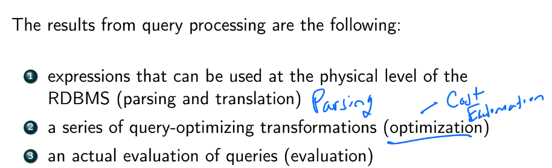
- 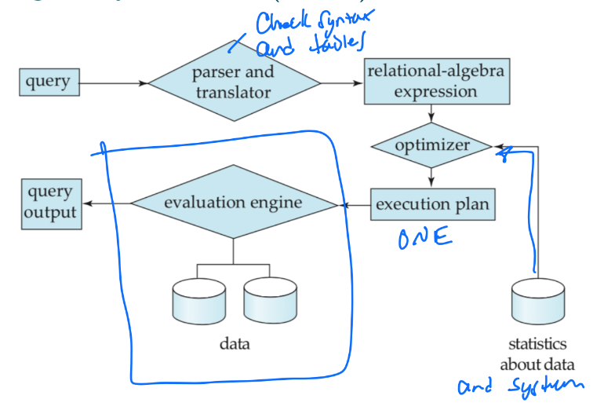
- step 1: parse/translate query into an internal form (based on relational algebra)
- also checks syntax and whether relations exist
- step 2: optimizer picks the most efficient query plan
- has info on the cost associated with each operation:
- estimated block transfers + seeks
- num of tuples
- current CPU/RAM state (psql uses this)
- data transfer speed
- disk space
- network transfer speed
- time
- most important costs are block transfer time tT and seek time tS
- cost to transfer B blocks and do S seeks is Btt+StS
- step 3: evaluate query plan, pull data from disk, and return in a table
Implementing the Select σ Operator
- we can naively do a O(n) full table scan to find the matches
- rule A1
- 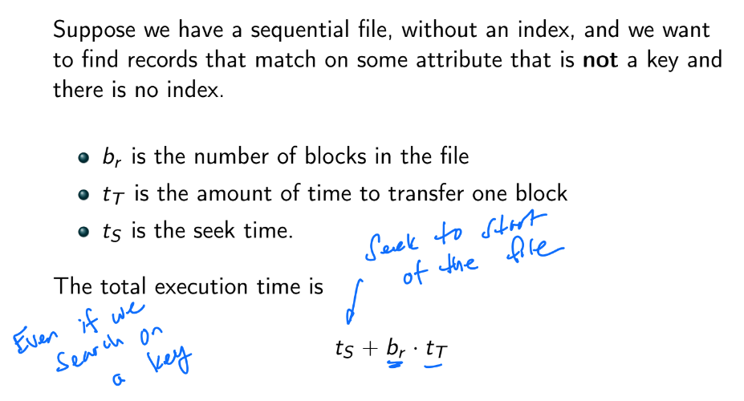
- but if blocks are not stored contiguously, we have to do a seek for each block (in the worst case), so brtS+brtT=br(tS+tT)
- what if we search on a key?
- there will only be one match
- worst case: key DNE or key in last block, so tS+brtT
- best case: key is in the first block, so
- assuming uniform / symmetric distrubtion over keys, then avg complexity is tS+(2br)tT
- rule A2
- suppose relation is indexed by a primary B+ tree and search on equality with unique key
-
- traverse B+ tree from root to proper leaf node h(tS+tT)
-
- search for record pointer in block: 0 time needed since whole leaf node already in RAM
-
- retrive the record pointed to by the key
- so total time spent on disk I/O is h(tS+tT)+tS+tT=(h+1)(tS+tT)
- rule ?
- suppose primary B+ Tree and search on a key v s.t. K≥v, and records stored contiguously
-
- find v in tree and traverse to leaf node: h(tS+tT)
-
- seek to the first record: ts
-
- transfer all blocks necessary as you walk linearly thru leaf nodes: btT
- in fact, a full index scan is better than using a B+ tree like the above: tS+btT
Implementing Join Operations ⋈
- Nested-Loop Join
- 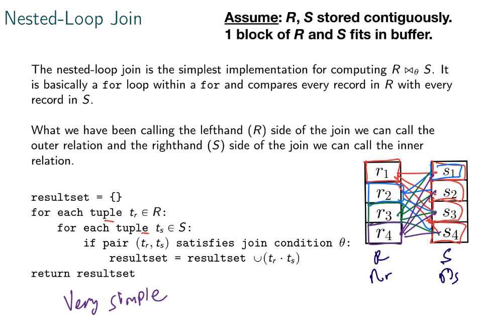
- pros:
- does not require an index
- no restrictions on join condition θ (most universal)
- cons:
- very SLOW: O(nr⋅ns)
- 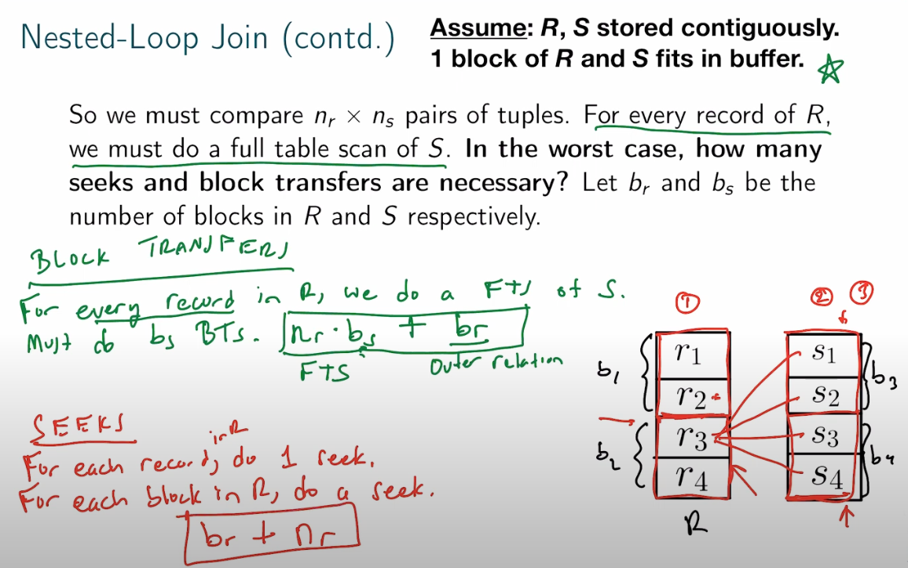
- suppose R fits entirely in main memory, its blocks are read exactly once
- we would want R to be in the inner loop
- block transfers: br+bs
- seeks: 1+1=2
- if R in the outer loop
- block transfers: br+nrbs
- seeks: 1+nr
- Block Nested-Loop Join
- process by blocks (that fit in RAM) instead of the whole relations
- compare every tuple in block Br with every tuple in block Bs
- 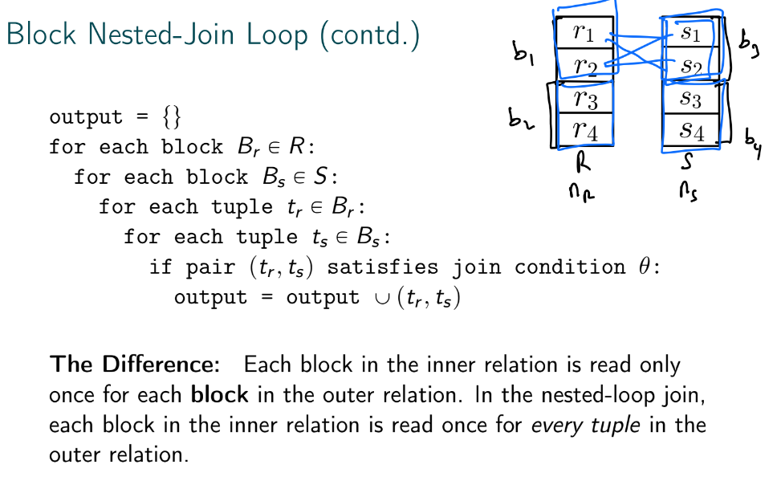
- block transfers: br+brbs=br(bs+1)
- seeks: 2br
- Indexed Nested-Loop Join
- put an index on the inner relation to replace file scans of the inner relation with index lookups
- can use an existing index or a temp one generated solely for the join (if optimizer decides it's cost efficient)
- 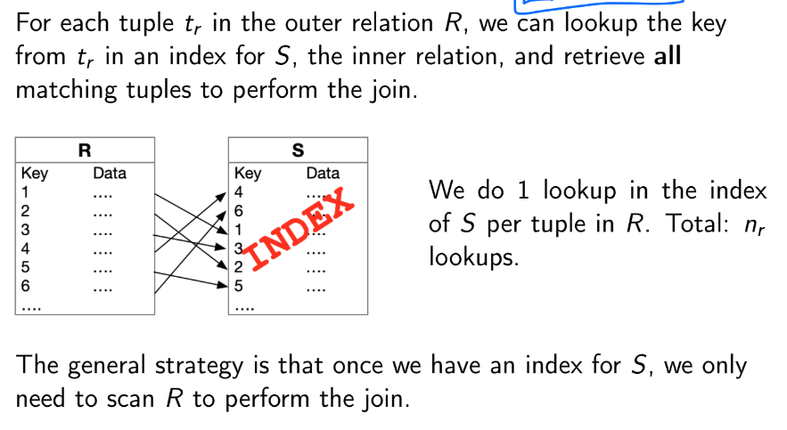
- 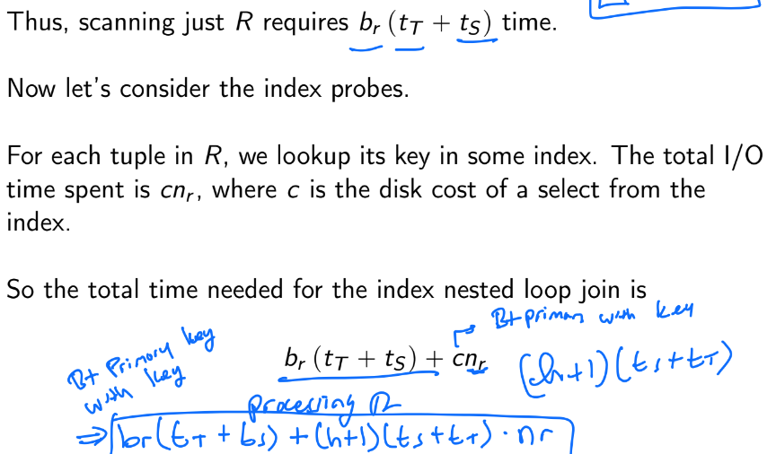
- Merge Join
- 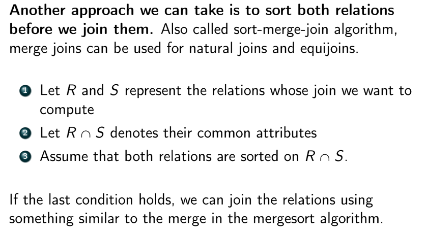
- maintain one pointer per table and do a interleaved linear search
- so only one full table scan for each relation
- block transfers: br+bs
- seeks: proportional to the # of tiems we switch between advancing the outer pointer and the inner pointer
- Hash Join
- choose one relation to be the build side, and the other to be the probe side
- fit as many blocks from build side as possible into RAM (a window) and build a hash table from the records contained
- FTS the probe side and see if we have hash matches
- rinse and repeat for the next window
- problem: hash collisions
- if we have ∣w∣ windows of blocks, we do ∣w∣ FTS on probe side
- have to post process to eliminate the hash collisions
Joins in Spark
- 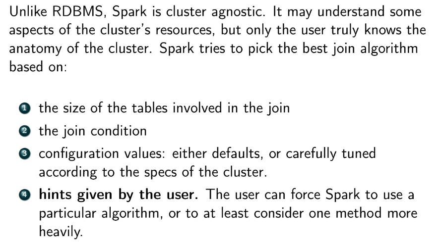
- Broadcast-Based Joins
- 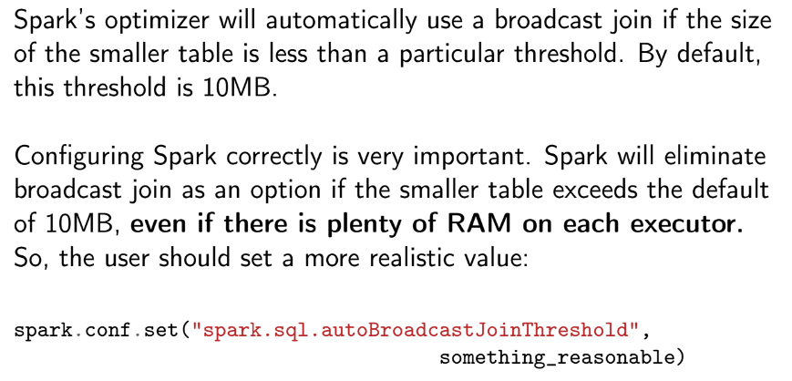
- 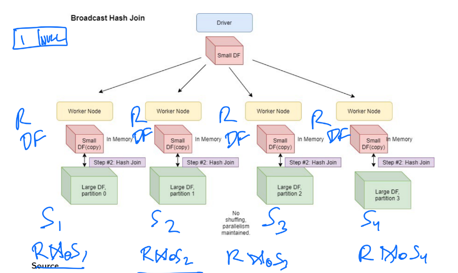
- R is the relation that fits in RAM
- inner equi-joins are perfect for this
- not good for outer joins bc of data locality
- a matching key might exist in S2 but not in S1
- S1 still writes a NULL row despite it being completely useless
- 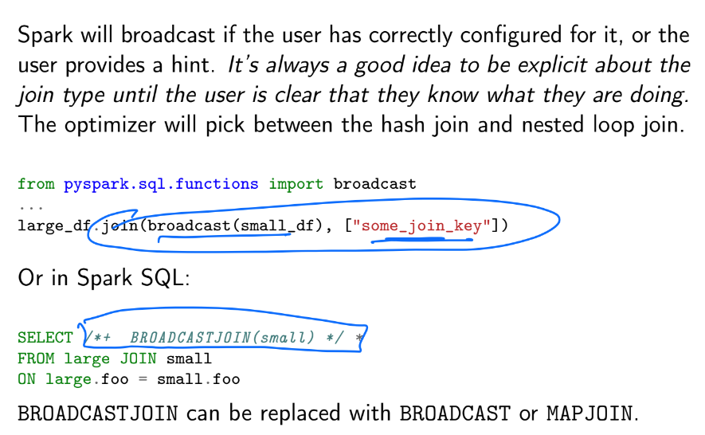
- Shuffle-Based Joins
- 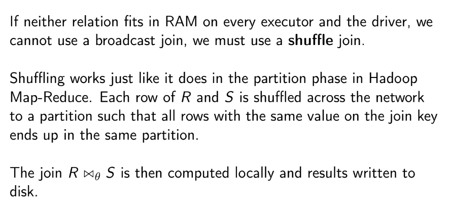
- 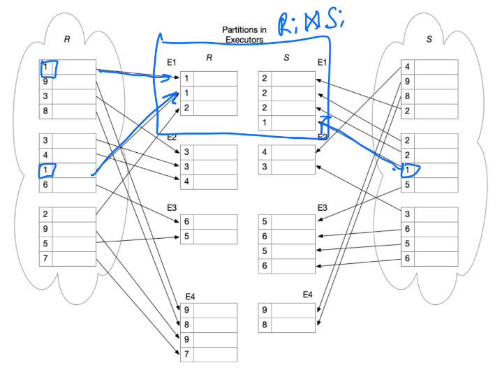
- problem: can be heavily impacted by key skew, which overloads certain executors
- 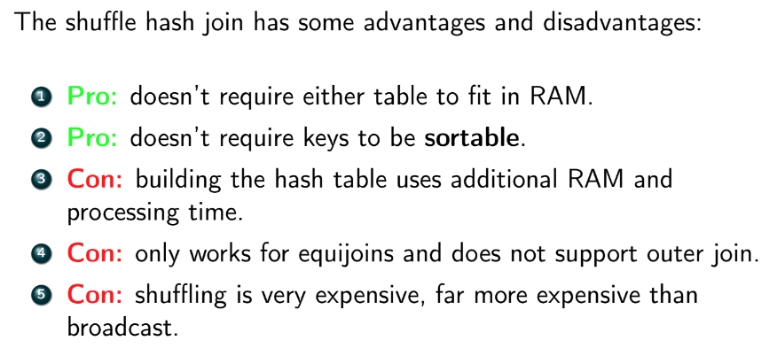
- 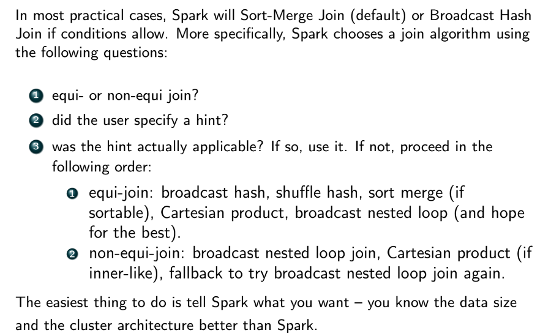